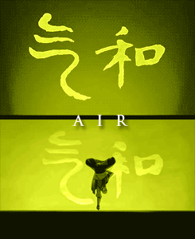

Home
Symbol of the Air Nomads

Left: Air elemental icon. Right: Nomad emblem
-
Location:
The air nomads are wanderers by definition, but had four air temples at the corners of the globe on remote islands.
-
Bending technique:

-
Way of life:
Air is the element of freedom.
The Air Nomads detached themselves from
worldly concerns and found peace and freedom